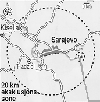
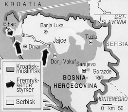

Faktaservice nr. 2 95/96, OKTOBER 1995
SARAJEVO-AVTALEN
Bosnia-serbernes tunge våpen skal trekkes 20 kilometer vekk fra Sarajevo, og serberne har gått med på å gjenåpne Sarajevos flyplass.
SARAJEVO
Avtalen innebærer at veiene som forbinder Sarajevo med byene Kiseljak og Hadzici gjenåpnes for FN-kjøretøyer.

PaleEt område på to kilometer rundt serbernes "hovedstad" inngår ikke i eksklusjonssonen.
BOSNIA-HERCEGOVINA
Bosanski Petrovac
Muslimske og kroatiske styrker i kamp for å erobre veien frem til den strategisk viktige byen Jajce.

Kilder: Reuter og Aftenposten

[Innhold] [Info]
[Aftenposten hjemmeside] [Til Fakta hovedside]